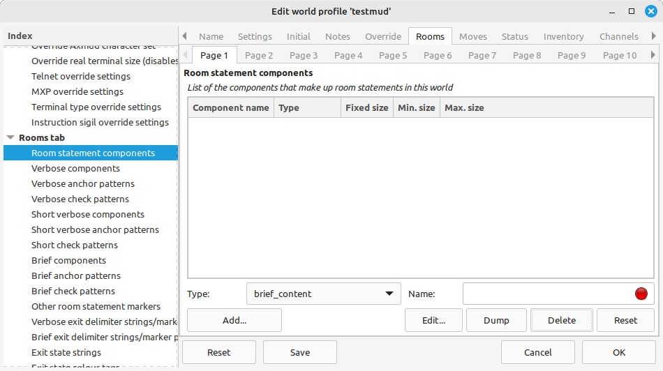
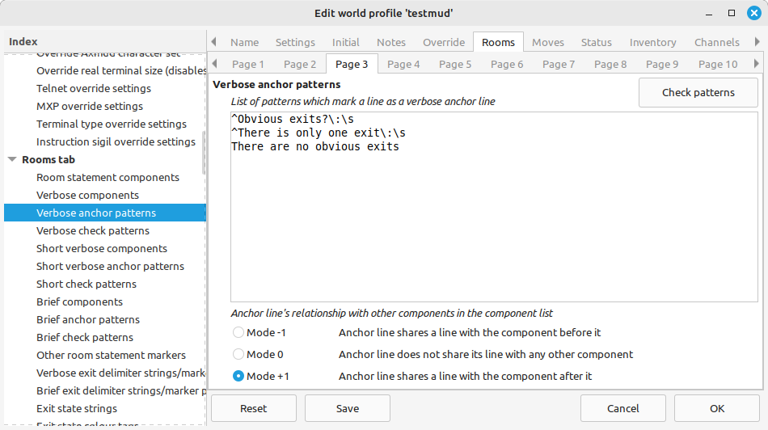
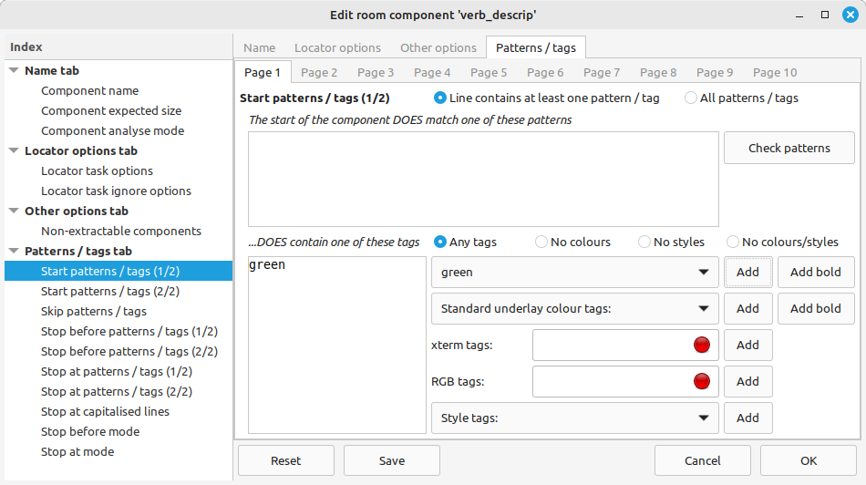

Axmud comes with over a hundred pre-configured worlds. This is the first of four tutorials which will show, step by step, how those pre-configured worlds were created.
Different worlds behave in a myriad of different ways, and Axmud aims to able to handle them all. As a result, there is rather a lot to read; however, much of it won't apply to your favourite MUD. You can skip the parts that you don't actually need.
You must be familiar with regular expressions/regexes/patterns (we use these terms interchangeably). Section 6 of the Axmud Guide tells you everything you need to know, so read that first, if necessary.
If you haven't used Axmud's automapper before, you should get used to it first: connect to any of the pre-configured worlds, and try drawing a simple map. The first few parts of Section 15 can help you with that, if necessary.
This tutorial deals with the Locator Task and automapper. In the remaining tutorials, we'll cover the Status Task, the Inventory and Condition tasks, and a few other things.
Several independent processes work together to help you draw your maps. Let's start by identifying them.
The world profile is a collection of settings that tell Axmud how to handle a world. Many of the settings for the automapper are stored in the world profile.
To see the current world profile, from Axmud's main window you can click Edit > Edit current world..., or type:
;editworld
;ewo
The world model is a database. It usually contains just rooms and exits, but it can 'model' many other parts of the game as well. A few more settings are stored here. To see the world model, click Edit > Edit world world... or type:
;editmodel
;emd
As you move around the world, the game sends lots of text. The Locator Task analyses this text, trying to identify your character's location. The analysis is available to any code that wants it. (You have probably noticed that the automapper does nothing when the Locator Task isn't running.)
The automapper is an (invisible) process that tries to keep track of your character's location in the world. When the Locator Task detects a location, that information is passed to the automapper.
The automapper's main job is to work out when your character is in the wrong place. For example, after moving north the automapper might think that you should be in a tavern, so if you've actually arrived in a shop, the automapper will mark itself as lost (and will stop tracking your location).
The automapper window is a completely separate process that handles map drawing. You can test this claim by closing the automapper window, moving around a bit, and then re-opening it: hopefully, the automapper still knows where you are, and the automapper window should be showing the correct location.
Your character's current location is received as a room statement. The room statement contains information about a single room. Here's a typical example.
Village Road Intersection
You are in the main intersection of the village, lit by a town lamp post. Saquivor road extends north and south, intersected east to west by a road that leads west toward a wilderness, and east toward shore.
Obvious exits: south, north, east, west
Two guards are here.
The room statement is made up of several components. In this case, we have four components: a title, a description, an exit list and a contents list.
A single component can consist of one or many lines. (The title is usually only one line; a description might be several lines).
In most worlds, each component appears on a separate line (or lines). It's very common for the title and list of exits to appear together on the same line, however. At a few worlds, a multi-line component might terminate in the middle of a line.
Axmud handles three types of room statement. The one just above is an example of a verbose statement, which usually contains a long description of the room.
A brief statement might look like this:
Village Road Intersection [s, n, e, w]
As you can see, it contains the minimum possible information: the room's title and the exit list, all in a single line. At many worlds you can switch modes by typing verbose or brief (sometimes by typing brief on and brief off).
The third type is a hybrid form called a short verbose statement. It is usually in the same format as a verbose statement, but without a room description.
Village Road Intersection
Obvious exits: south, north, east, west
Two guards are here.
When you configure a world, you can set up just one of the statement types, or two of them, or even all three.
Going back to our verbose statement:
Village Road Intersection
You are in the main intersection of the village, lit by a town lamp post. Saquivor road extends north and south, intersected east to west by a road that leads west toward a wilderness, and east toward shore.
Obvious exits: south, north, east, west
Two guards are here.
Our first decision is choose a line that consistently matches a pattern. At the vast majority of worlds, the exit list appears in a clear and consistent format, so that's the line we choose:
Obvious exits: south, north, east, west
Obvious exits: north, northeast, east, southeast, south, southwest, west, northwest, up, down
Obvious exit: north
All of these lines match the following regex/pattern:
^Obvious exits?\:\s
(The question mark after the letter s make the letter optional, so that we match both Obvious exit and Obvious exits. The colon is always followed by a space, so we can include the \s in our pattern.)
Axmud assumes that every room statement includes exactly one line matching the pattern. This line is called the anchor line.
When Axmud receives text from the world, the Locator Task analyses it, one line at a time, looking for anchor lines. When an anchor line is found, the Locator checks the text above and below the anchor line, looking for the other components.
In the example above, having found the exit list, the Locator checks the first line above it, and finds the description. Checking the line above that, it finds a room title. Knowing that each room statement begins with a title, the Locator stops checking lines above.
Next, the Locator checks the first line below the anchor line, and finds the contents list. Knowing that some room statements end with a contents list, but that some rooms don't have any contents at all, the Locator stops checking lines below.
Some components are compulsory, and some are optional. At many worlds, we'll decide to make the room title and exit list compulsory, but the room description and contents list optional. If a compulsory component is missing, the Locator ignores the anchor line, and starts looking for a new one. In this example, Axmud would still recognise the title if the description was missing.
So, we have a statement consisting of four components. We have an anchor line (the list of exits) and a pattern that matches it. After finding the anchor line, the Locator checks the lines above, then the lines below, looking for more components.
Therefore, in order to set up the automapper completely, we only need to do these things:
In fact, in most cases it is even simpler than that. Invariably, the automapper will work perfectly with just the list of exits, so that is the only component that you need to define. This is what we recommend: define that one component and ignore all of the others. (You can set up the others later, if you really want them.)
Axmud recognises a number of different components. Some of them are designed for verbose statements, some for brief statements, and others are suitable for all types of statement.
Here is a complete list, starting with:
These components are designed for verbose and short verbose statements:
These components are designed for brief statements:
These components can be used anywhere:
Note that it's allowed to use brief components in a verbose statement, and vice-versa, if you really really need to do that.
Enough theory, time for some action. If you haven't already done so, you should create a completely new world profile, so that you can practice without messing up any existing profiles you have.
We'll start by configuring Axmud to recognise the verbose statement:
Village Road Intersection
You are in the main intersection of the village, lit by a town lamp post. Saquivor road extends north and south, intersected east to west by a road that leads west toward a wilderness, and east toward shore.
Obvious exits: south, north, east, west
Two guards are here.
Open the world profile's edit window, and click the Rooms > Page 1 tab. We use this tab to create new components. (The anchor component already exists, so we don't have to create it here.)

Now click Page 2. This is a list of components for verbose statements, in the correct order (from top to bottom).
Because of a bug in v1.3.008, the anchor component is missing from the dropdown box. To make it appear, close the edit window, and open a new one.
An important thing to realise is that the anchor component and the verb_exit components occupy the same line. We'll talk more about this later, but for now, make sure that anchor comes after verb_exit in the list.
Exactly the same process is used for short verbose statements:
Village Road Intersection
Obvious exits: south, north, east, west
Two guards are here.
Click Page 5 to see the corresponding list. If you wanted the Locator to recognise short verbose statements, you would add the components verb_title, verb_exit, anchor and verb_content (in that order).
Now consider a brief statement:
Village Road Intersection [s, n, e, w]
Two guards are here.
To configure this list, you would first click Page 1 to create the components brief_title_exit and brief_content. Then you would click Page 8 to add them to the list in the order brief_title_exit, anchor, brief_content.
After a little practice, you should be able to create the components you need, adding them to the correct list in the right order, for any world you want to play.
We'll now focus on verbose statements exclusively, ignoring for the moment short verbose and brief statements.
Village Road Intersection
You are in the main intersection of the village, lit by a town lamp post. Saquivor road extends north and south, intersected east to west by a road that leads west toward a wilderness, and east toward shore.
Obvious exits: south, north, east, west
Two guards are here.
The next job is to create a pattern to match the exit list (which is the anchor line). We have already seen a suitable regex, so click Page 3 and paste it into the box there:
^Obvious exits?\:\s
At some worlds, you might need more than one pattern. Consider the following exit lists:
Obvious exits: south, north, east, west
There is only one exit: north
There are no obvious exits
In that case, you would need to add three separate patterns. At least one of them must match the anchor line in every room statement.
^Obvious exits?\:\s
^There is only one exit\:\s
There are no obvious exits

Having recognised a list of exits, Axmud needs to know which bits of text are actually exits, and which are not.
Click on Page 12. In our example, the exits themselves are separated by a comma, followed by a space. This is called the delimiter. In the top-left box, type a comma followed by a space.
The marker is a pattern which matches a part of the line that does not contain the exits themselves. Because of our careful regex design, earlier in the tutorial, we are now able to use exactly the same pattern(s), which can be entered into the the bottom-left box.
^Obvious exits?\:\s
^There is only one exit\:\s
There are no obvious exits
The Page 12 tab applies to both verbose and short verbose statements. A separate set of delimiters and markers is available for short statements on Page 13.
A malformed regex can cause crashes, and that is something you definitely want to avoid. Once you've finished designing your regexes, click the Check patterns button to make sure they are valid regular expressions that won't cause a crash.
The process for interpretting a contents list is a little simpler (click Page 19).
Some worlds will have a nice, simple layout that (for example) always ends is here or are here.
Two guards are here.
The sword is here.
In that case, you can add patterns matching the parts of the line whose words are not part of the object(s), namely:
are here\.
is here\.
By the way, Axmud can already handle multiple objects on the same line, so in most circumstances you don't need to do anything else in order for this line to be parsed correctly.
Two trolls, three hobbits and an elf are here.
Unfortunately, some worlds are rather more creative, and produce text like this:
The sword of Excalibur is embedded in a rock here.
It would be pointless to add a pattern matching the is embedded in a rock here portion, since it's unique to the object, and there might be thousands of different objects. In this situation, Axmud cannot easily parse the text; it would be easier to make this an ignore component. Because it's the last component, we could just as easily pretend that it doesn't exist at all.
The next step is to specify how each component starts, and how each component stops. Once again, we can use patterns to achieve this.
Again using the same example, let's suppose the server has split the description across several lines. Each line is now numbered for your convenience.
{1} Village Road Intersection
{2} You are in the main intersection of the village, lit by a town lamp post. Saquivor
{3} road extends north and south, intersected east to west by a road that leads west
{4} toward a wilderness, and east toward shore.
{5} Obvious exits: south, north, east, west
{6} Two guards are here.
Having found the exit list on line 5, the Locator starts checking the lines above, one at a time, from line 4 upwards. The description component comprises lines 2-4, so we need to specify how to recognise the start line (4) and the stop line (2).
Depending on the world, this is either simple, or extremely fiddly, or somewhere in between. In this example, the start line is the final line of the description, so it ends with a full stop/period. (Notice that the room title does not end with a full stop/period; this is an extremely common format.)
So, the start line matches the following pattern:
\.$
...which is to say, the full/stop period at the end of a line.
The stop line is a much trickier. In fact, there is often no way to reliably determine the stop line. Therefore, we're forced to guess; we might use the following pattern:
^[A-Z]
...which is to say, a capital letter at the beginning of a line. In this case, the guess will work, but often it won't.
Now, click on Page 2, select the line verb_descrip, then click the Edit button. A new window appears, in that, click the Pattens/tags tab.
On Page 1, enter the pattern matching the start line in the box at the top. On Page 4, enter the pattern matching the stop line in the box at the top. Then click the OK button to close the window.
That's the verb_descrip component out of the way. The verb_title is much simpler, because we can assume that it occupies exactly one line.
So, again in Page 2, select the line verb_title, then click the Edit button. A new window appears.
This time we won't add any patterns; we'll just specify that the component has a fixed size of 1 line. Click the Name tab, type 1 in the box near the top, then click the OK button to close the window.
Because we didn't specify a start pattern, Axmud will accept the first line it finds (line 2 in this example), without testing it. If we had specified either a start or a stop pattern, Axmud would have tested the line against one (or both) patterns before accepting it.
If we had not specified a fixed size, and if we had not specified a stop pattern, Axmud would have gone on checking lines until it runs out of them. Usually, the previous room statement is found first; Axmud knows the position of that previous statement, so it will stop checking there.
(There is actually a sanity test in place, but it shouldn't concern you right now. The correct method is to set up your components correctly, not to rely on sanity checks.)
The stop situation described above is so common, that Axmud provides some shortcuts for it.
Once again, select verb_descrip and click the Edit button. In the new window, click Patterns/tags > Page 8. In the box marked Stop at the n-th line which starts with a capital letter, enter the number 1, meaning at the first such line (in our example, line 2).
If you do this in addition to specifying the stop pattern described just above, Axmud will perform tests in the obvious order - the order used in the edit window, starting with Page 1, going page by page until Page 10 is reached.
Some worlds use different colours and/or styles to separate the components of a room statement. (Italics, bold text and so on are examples of a style).
If the game uses a consistent colour scheme - yellow for room tiles, green for descriptions, for example - then we can use those colours, instead of specifying patterns.
Click Page 2, select the line verb_description, then click the Edit button. A new window appears.
Click Patterns/tags > Page 1. In the dropdown box marked Standard text colour tags, select green, and click the Add button.
(There is an Add bold button here. The Locator treats normal and bold green text interchangeably by default, so you only need the Add bold button if you have disabled that behaviour.)

Now click Page 5, which is marked Stop before the first line which does NOT match one of these patterns. Add green here, too.
You could repeat this process for the verb_title component, but since it's a single-line component, that's probably not necessary.